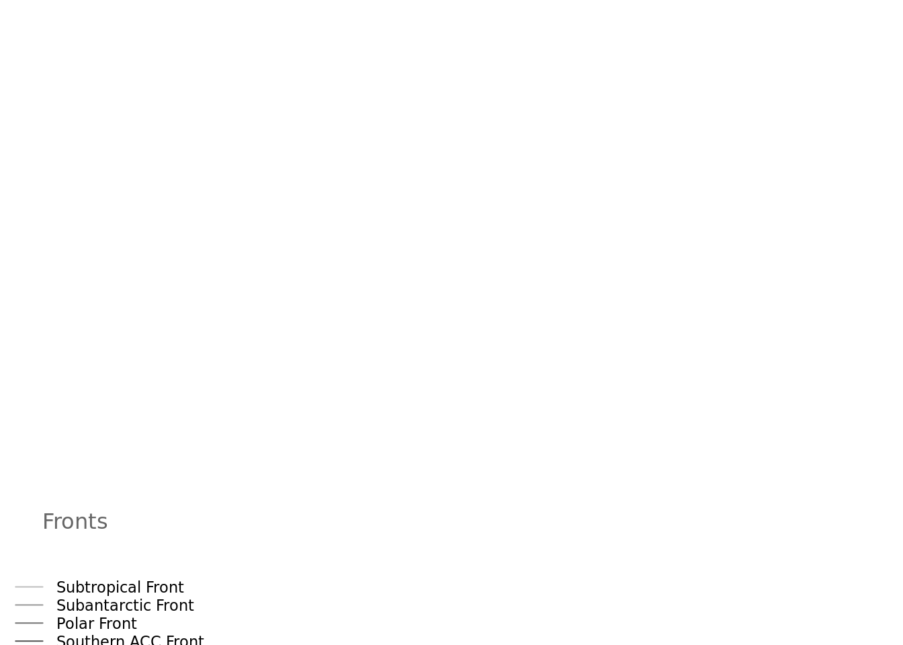

Editorial note: This work is carried out using generally available R packages from CRAN. The content in this document was prepared before it was published, and in this form it may again be updated. There’s also a step where some CCAMLR polygons are read in from shapefiles that must be manually downloaded. In future we can remove this requirement and make things much easier.
Get ready
Required R packages.
library(graticule)
library(orsifronts)
library(raadtools)
library(raster)
library(RColorBrewer)
library(rgdal)
library(rgeos)
library(rworldmap)
library(sp)Load world map, crop it and re-project to polar centric view.
data(countriesLow)
raster.map <- raster(xmn=-180, xmx=180, ymn=-90, ymx=-20)
mp <- crop(countriesLow, extent(raster.map))
## probably use lat_0=-90 for more general maps, it's a bit off-centre
pprj <- "+proj=laea +lat_0=-60 +lon_0=180 +datum=WGS84 +ellps=WGS84 +no_defs +towgs84=0,0,0"
w <- spTransform(mp, CRS(pprj))Grab topo for bathymetric contours, remove contours on land (>0m) and re-project to polar centric view.
topo1 <- readtopo("etopo2", xylim=extent(raster.map))
topo1[topo1 > 0 ] <- 0
cl1 <- rasterToContour(aggregate(topo1, fact=16, fun=mean))
pcl1 <- spTransform(cl1, CRS(pprj))Load fronts and re-project to polar centric view.
front <- spTransform(orsifronts, CRS(pprj))
## Choose some colours for the Southern Ocean fronts
## and store with the data
front$fcol <- brewer.pal(n=9, name="Greys")[4:8]Create graticule lines to add to map.
xx <- c(0, 90, 180, 270, 360); yy <- c(-80, -60, -40, -20)
g3 <- graticule(xx, yy, proj=projection(pprj))
g4 <- graticule(xx, -20, proj=projection(pprj))
g3labs1 <- graticule_labels(lons=180, xline=180, yline=-20, proj=projection(pprj))
g3labs2 <- graticule_labels(lons=0, xline=180, yline=-20, proj=projection(pprj))
g4labs <- graticule_labels(lats=c(-40, -60, -20), yline = -20, xline=0, proj=projection(pprj))Let’s add a polygon, in this example it represents the foraging distribution of Macquarie Island light-mantled albatross.
g <- graticule(c(135, 200), c(-70, -40), proj = "+proj=laea +lat_0=-90 +datum=WGS84")
pg <- spTransform(g, CRS(pprj))Let’s add a shapefile. How about the CCAMLR managment boundary? You can get it from here: https://gis.ccamlr.org/home
#Read in shapefile. NOTE: Automatically read in as SpatialPolygonsDataFrame
ccamlr <- readOGR("../../data-raw/CCAMLR/gis_subareas", "statistical_areasPolygon")## OGR data source with driver: ESRI Shapefile
## Source: "../../data-raw/CCAMLR/gis_subareas", layer: "statistical_areasPolygon"
## with 19 features
## It has 15 fields#Re-project
ccamlr <- spTransform(ccamlr, CRS(pprj))Function to add latitude and longitudinal labels.
pltg <- function() {
p <- par(xpd=NA)
text(coordinates(g3labs1[g3labs1$islon, ]), lab=parse(text=g3labs1$lab[g3labs1$islon]), pos=3, cex=0.8)
text(coordinates(g3labs2[g3labs2$islon, ]), lab=parse(text=g3labs2$lab[g3labs2$islon]), pos=1, cex=0.8)
text(coordinates(g4labs[!g4labs$islon, ]), lab=parse(text=g4labs$lab[!g4labs$islon]), pos=3, cex=0.8)
par(p)
}Create a dataframe with all the relevant geographic locations you would like to include on your map, including a logical (Y/N) as to whether we want a marker added or not and a left, centre or right adjustment (adj).
## a tip from twitter
#https://twitter.com/dmi3k/status/837421359936438273
colony <- data.frame(lon=c(158.945, 160.431, 160.5, -120, -25.673, 81.826, -71.383, -155.847, -90, 175, 169.16, -38.03, 37.866, 9.85, -62.03, 69.16, 51.21, 73.50, -59.52), lat=c(-54.495, -40.858, -50.6, -31, -31, -33, -59.914, -40, -40, -49, -52.51, -54.00, -46.88, -25.21, -48.00, -49.25, -46.322, -53.08, -51.79), name=c("Macquarie Is.", "Tasman\nSea", "Macquarie\nRidge", "Pacific\nOcean", "Atlantic\nOcean", "Indian\nOcean", "Drake Passage", "South-west\n Pacific Basin", "South-east\n Pacific Basin", "Campbell\nPlateau", "Campbell Is.", "Bird Is.\n(South Georgia)", "Marion and\nPrince Edward Is.", "Benguela\nCurrent", "Patagonian\nShelf", "Kerguelen Is.", "Crozet Is.", "Heard and\nMacDonald Is.", "Falkland Is."), marker=c("y", "n", "n", "n", "n", "n", "n", "n", "n", "n", "y", "y", "y", "n", "n", "y", "y", "y", "y"), adj = c(0, 0.5, 1, 0.5, 0.5, 0.5, 0.5, 0.5, 0.5, 0.5, 0, 0, 0, 0.5, 0.5, 0, 0, 0, 1),
stringsAsFactors = FALSE)Now here is the ugly bit. To offset the labels from the markers, we adjust the lat/lons of the subsetted labels. Then re-project them to have a polar-centric projection.
lab_pos <- colony[grep("Is.", colony$name), ]
lab_pos$lon[lab_pos$name %in% c("Macquarie Is.", "Campbell Is.")] <- lab_pos$lon[lab_pos$name %in% c("Macquarie Is.", "Campbell Is.")] + 2
lab_pos$lat[lab_pos$name %in% c("Macquarie Is.", "Campbell Is.")] <- lab_pos$lat[lab_pos$name %in% c("Macquarie Is.", "Campbell Is.")] - 0.5
lab_pos$lon[lab_pos$name %in% c("Marion and\nPrince Edward Is.")] <- lab_pos$lon[lab_pos$name %in% c("Marion and\nPrince Edward Is.")] - 1.0
lab_pos$lat[lab_pos$name %in% c("Marion and\nPrince Edward Is.")] <- lab_pos$lat[lab_pos$name %in% c("Marion and\nPrince Edward Is.")] - 0.5
lab_pos$lon[lab_pos$name %in% c("Crozet Is.")] <- lab_pos$lon[lab_pos$name %in% c("Crozet Is.")] - 1.0
lab_pos$lat[lab_pos$name %in% c("Crozet Is.")] <- lab_pos$lat[lab_pos$name %in% c("Crozet Is.")] - 1.0
lab_pos$lon[lab_pos$name %in% c("Kerguelen Is.")] <- lab_pos$lon[lab_pos$name %in% c("Kerguelen Is.")] - 2.5
lab_pos$lat[lab_pos$name %in% c("Kerguelen Is.")] <- lab_pos$lat[lab_pos$name %in% c("Kerguelen Is.")] - 0.5
lab_pos$lat[lab_pos$name %in% c("Heard and\nMacDonald Is.")] <- lab_pos$lat[lab_pos$name %in% c("Heard and\nMacDonald Is.")] - 1.0
lab_pos$lon[lab_pos$name %in% c("Bird Is.\n(South Georgia)")] <- lab_pos$lon[lab_pos$name %in% c("Bird Is.\n(South Georgia)")] - 1.0
lab_pos$lat[lab_pos$name %in% c("Bird Is.\n(South Georgia)")] <- lab_pos$lat[lab_pos$name %in% c("Bird Is.\n(South Georgia)")] + 1.0
lab_pos$lon[lab_pos$name %in% c("Falkland Is.")] <- lab_pos$lon[lab_pos$name %in% c("Falkland Is.")] + 1.0
lab_pos$lat[lab_pos$name %in% c("Falkland Is.")] <- lab_pos$lat[lab_pos$name %in% c("Falkland Is.")] - 0.5Make labels and markers SpatialPoints. Then re-project them to have a polar-centric projection.
coordinates(colony) <- c("lon", "lat")
projection(colony) <- "+proj=longlat +datum=WGS84"
geog <- spTransform(colony, CRS(pprj))
coordinates(lab_pos) <- c("lon", "lat")
projection(lab_pos) <- "+proj=longlat +datum=WGS84"
lab_pos <- spTransform(lab_pos, CRS(pprj))We’re going to save this plot out as a high res tiff file.
tiff(file= "mymapcalledwhatever.tiff", width=7.5, height=7.5, units="in", res=300)Ok now for the plot
#Set the plotting parameters
par(family="serif", bty="n", mar=c(1, 1, 1, 0), font=2)
#plot blank map to appropriately set bounds
plot(w, col="white", border=FALSE)
#add contours
plot(pcl1, add=TRUE, col=grey(0.7, alpha=0.3))
#Add graticule lines
plot(g3, add=TRUE, lty=3)
## use the colours we specified earlier
plot(front, add = TRUE, lty = 1, lwd = 1, col = front$fcol)
#Choose some colours for the labels we will add to the plot
col <- brewer.pal(3, "Dark2")
#Add CCAMLR polygon from shapefile
plot(ccamlr, add=T, border=F, col="#1E90FF26")
#Add polygon of albatross distrbution
plot(gPolygonize(pg), col = "#1B9E774D", add=T, border=FALSE)
#Add world map
plot(w, col="darkgrey", border=FALSE, add=TRUE)
#Add markers
plot(geog[geog$marker=="y", ], col=col[3], border=FALSE, add=TRUE, pch=19, cex=0.5)
#Add labels for all those we want left justified
text(lab_pos[lab_pos$adj==0, ], labels=lab_pos$name[lab_pos$adj==0], cex= 0.75, adj=0, col=col[3])
#Add labels for all those we want right justified
text(lab_pos[lab_pos$adj==1, ], labels=lab_pos$name[lab_pos$adj==1], cex= 0.75, adj=1, col=col[3])
#Add a label that we want in a different colour and right justified
text(geog[geog$name %in% c("Macquarie\nRidge"), ], labels=geog$name[geog$name %in% c("Macquarie\nRidge")], cex= 0.75, adj=1, col=col[2])
#Add in the rest of the feature we want in black text
text(geog[geog$name %in% c("Tasman\nSea", "Drake Passage", "South-west\n Pacific Basin", "South-east\n Pacific Basin", "Campbell\nPlateau", "Benguela\nCurrent", "Patagonian\nShelf"), ], labels=geog$name[geog$name %in% c("Tasman\nSea", "Drake Passage", "South-west\n Pacific Basin", "South-east\n Pacific Basin", "Campbell\nPlateau", "Benguela\nCurrent", "Patagonian\nShelf")], cex= 0.75, adj=0.5, col="black")
#Add the ocean names in green
text(geog[geog$name %in% c("Pacific\nOcean", "Atlantic\nOcean", "Indian\nOcean"), ], labels=geog$name[geog$name %in% c("Pacific\nOcean", "Atlantic\nOcean", "Indian\nOcean")], cex= 0.75, adj=0.5, col=col[1])
#Add in a line to signify Macquarie Ridge
arrows(x0=-1341759, x1=-1016381, y0=500292.8, y1=1408583, length=0, angle=0, code=1, col=col[2], lty=1, lwd=0.8)
#Add a graticule border
plot(g4, add=TRUE)
#Add labels
pltg()
Lets make a legend to finish it off
#Set up par(new=T) to plot over the top of your map
par(new=T, mar=c(0, 0, 0, 0), font=1)## Warning in par(new = T, mar = c(0, 0, 0, 0), font = 1): calling
## par(new=TRUE) with no plot#Add empty plot
plot(1, type="n", axes=F, xlab="", ylab="")
#Add headed
mtext('Fronts', side=1, cex=1, line=-5.3, col="grey40", at = 0.64)
#Add legend, referencing the coordinates of the empty plot
legend(x = 0.57, y = 0.67, c("Subtropical Front", "Subantarctic Front", "Polar Front", "Southern ACC Front", "Southern Boundary of ACC"), lty=c(1, 1, 1, 1, 1), col=front$fcol, bty="n", cex=0.7, inset=0.5)
Close plotting window to save.
dev.off()## null device
## 1
Share this post
Twitter
Google+
Facebook
Reddit
LinkedIn
StumbleUpon
Email